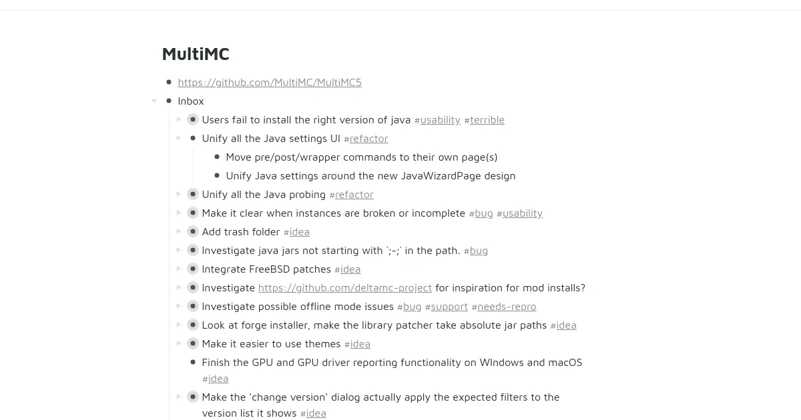

本当は安いRoam Research

Roam Researchの料金体系が明らかになった。月額15ドル、年払いだと165ドルだ。信者には5年分前払いするプランも用意されている。お布施で53,635円は高いとは言えない。クリスチャンの什一献金には及ばない。しかし、The_Viking_Sock氏にとっては高いようである。
The_Viking_Sock-2 points · 3 days agoOh just fk off with your stupid spam mails and those fake comments here ... all written in the same style with the same grammar. JUST FUCK OFF and stop sending me your stupid spam mails
fuck offは句動詞である。go awayという意味だ。The_Viking_Sock氏は、Roamに対してスパムメールだとかスレッドにあるコメントはフェイクだと罵っている。怒っているのはロシア人も同じだ。Mediumでロシア語で綴っているブログに、月額15ドルは法外だと涙を流して嘆いている者もあった。購買力平価を測定するビッグマック指数は、日本は26位で-37.49％だ。ロシアは55位で-61.24%である。
ロシア連邦政府は9月21日、法定最低賃金を2020年1月1日から、月額1万2,130ルーブル（約2万621円、1ルーブル＝約1.7円）に引き上げる法案を承認したと発表した。
ルーブルは安い通貨だ。そして、最低賃金は月額1万ルーブルと少しである。Roamを利用するためにも10万ルーブルは欲しいところだ。Roamはアメリカではビッグマック3個分である。ロシアでビッグマックを3個買うと7ドルだ。Roamがロシアで開発されていれば、あらゆるサブスクリプションサービスがロシア発であれば、どんなに幸せなことだろう。
Effective Jan. 1, Sunnyvale’s minimum wage will rise to $16.05 an hour —the highest in the country — up from $15.65. The City of Santa Clara’s current lowest rate of pay is $15 an hour and will be $15.40 at the start of the year.
カリフォルニア州にある人口15万人のサニーベール市は、最低賃金が時給16ドルである。書くことに疲れてきたので端折る。したがって、Roamが月額15ドルで利用できるのは安い。これから機能を追加をしていく予定なのであるから、高騰した人件費を賄う必要があるのは明らかだ。
1. There are definitely still going to be occasional bugs.
For example - we have 7 people in our shared team Roam right now, and every week or so we get a synching error where one of our teams notes end up moved to the wrong place.
心もとないのが、7人のチームで毎週のように同期の問題が発生していることだ。電算用語の基礎知識の計算機スラング編には、「飛ぶ」という用語がある。制御を失うこと。その結果として、データなどが消えてしまうことと説明されている。
Roamの最大の特徴はリンクである。リンクの機能があるので階層的に整理せずに済む。特定のキーワードをリンクにすれば、芋蔓式に情報を引き出せるのだ。
XにもYにも「P」というキーワードが登録されていれば「Pつながり」でXとYを関連づけるのは簡単である。XとYの両方に「P」というキーワードを登録しておくだけで簡単に芋蔓検索することが可能になる。 つまり写真にキーワードを登録するだけで写真の芋蔓検索ができるようになるわけで、それ以外の属性を利用した芋蔓検索も併用すればかなりのデータを芋蔓検索することが可能になることになる。

このように池田信夫氏のツイートをダウンロードし、Roamに貼り付け「リスク」というキーワードをリンクにすると、grepで検索したかのように表示することができる。これにより玉川徹氏と、テロとの戦いでテロより多くの犠牲者を出した人物とに、共通する何かを見いだせる気がしないだろうか。

リンクを活用しないのであれば、WorkflowyやDynalistなどのアウトラインプロセッサを利用すればよい。扱いやすい階層構造を持つToDoリストとして、夕食の買い出しに貢献してくれるはずだ。